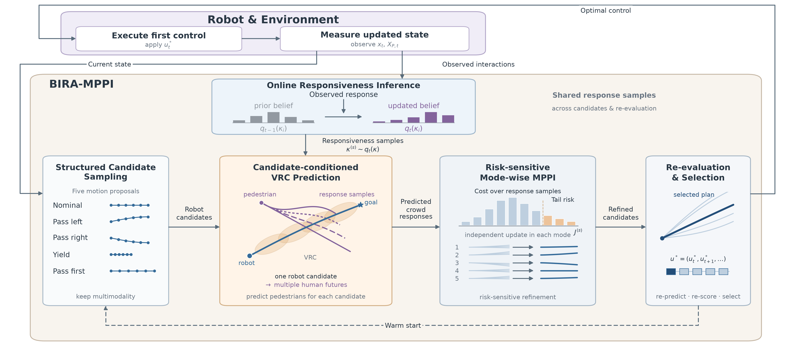

Abstract
Safe crowd navigation requires anticipating pedestrian reactions to robot motion under uncertain individual responsiveness. We propose BIRA-MPPI, a belief-informed responsiveness-aware framework based on Model Predictive Path Integral (MPPI) control. A Virtual Risk Corridor (VRC) models the robot’s trajectory-dependent influence, scaled by pedestrian-specific latent responsiveness gains. Beliefs over these gains are updated online from observed interactions under a variational free-energy formulation.
Propagating sampled gains through VRC dynamics yields pedestrian trajectory distributions conditioned on each robot candidate. The planner combines expected cost with conditional value-at-risk and independently refines five motion modes to preserve multimodality, recomputing predictions and risks before final selection. Closed-loop SocNavGym experiments with ten ORCA pedestrians cover uncooperative, probabilistic, and cooperative response regimes, using 50 matched scenarios per regime. BIRA-MPPI achieves higher success and lower collision rates than constant-velocity and fixed-responsiveness VRC baselines across all regimes.
Framework Overview
A closed loop between observing interactions, predicting responses, and planning robot motion.

Experimental Results
| Behavior | Method | Success (%) ↑ | Collision (%) ↓ | Navigation (s) ↓ | Path (m) ↓ | Planning (ms) ↓ |
|---|---|---|---|---|---|---|
| Uncooperative | CV-MPPI | 74 | 20 | 23.13 | 14.97 | 9.17 |
| VRC-MPPI | 50 | 36 | 23.09 | 13.71 | 31.56 | |
| BIRA-MPPI | 82 | 14 | 23.32 | 15.14 | 57.98 | |
| Probabilistic | CV-MPPI | 74 | 12 | 22.77 | 14.59 | 9.13 |
| VRC-MPPI | 68 | 16 | 25.06 | 13.65 | 31.60 | |
| BIRA-MPPI | 88 | 4 | 22.70 | 15.11 | 57.95 | |
| Cooperative | CV-MPPI | 84 | 6 | 23.91 | 14.92 | 9.13 |
| VRC-MPPI | 72 | 12 | 22.84 | 13.46 | 31.61 | |
| BIRA-MPPI | 86 | 4 | 23.95 | 15.08 | 58.06 |
Navigation time and path length are averaged over successful episodes only, so the methods’ averages cover different episode subsets. Planning times are per-decision means.